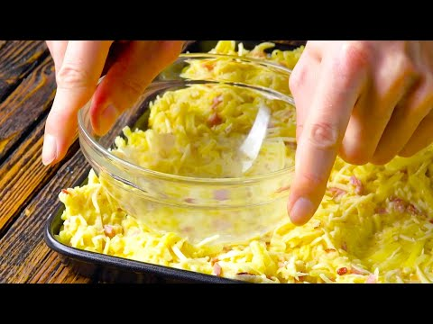

21 deliciosas recetas para preparar en menos de 30 minutos
 Webedia Directo al Paladar Menú Nuevo Buscar Pinterest Facebook Flipboard Instagram Youtube POSTRES MENÚ SEMANAL SELECCIÓN
Partners
Triunfa Con Buitoni Cocina con Maggi Destaca con Pascual21 deliciosas recetas para preparar en menos de 30 minutos
1 comentario HOY SE HABLA DE Menú Dieta Refresco España Alimentos Ofrecido por PascualCómo preparar unas crepes perfectas y dos ideas (dulce y salada) para rellenarlas
Ofrecido por MaggiPor qué mucha gente tiene la tortilla de patata y calabacín como su receta favorita de este clásico
Ofrecido por BuitoniEmpanadas criollas: la edad dorada de una elaboración de origen humilde
Compartir 21 deliciosas recetas para preparar en menos de 30 minutos
Facebook Twitter Flipboard Email Síguenos Twitter Facebook Youtube Instagram Pinterest Flipboard 02 julio 2016, 22:57 Esther Clemente @tatin_blogSi durante el invierno el tiempo apremia, pues el trabajo, el colegio de los niños, los días más cortos, hace que las jornadas parezcan reducidas a la mitad. En verano, aunque nos tomamos las cosas con más calma, tampoco nos apetece pasarnos muchas horas en la cocina , para que nos vamos a engañar.
Así que estaría genial venir de la playa y poder comer bien y rico teniendo un plato en la mesa en poco más o menos media hora y que no sea una sencilla ensalada.
¿Parece difícil, verdad? ¡Pues para nada!, si os quedáis con alguna de estas 21 deliciosas recetas para preparar en menos de 30 minutos que os presento hoy.
Un vistazo a… FILETES DE COLIFLOR con salsa chimichurriEntrantes sabrosos en menos de 30 minutos
Si os toca cocinar, pero podéis haceros con un pinche en la cocina, mientras que preparáis el plato principal, vuestro ayudante puede ir cocinando alguno de estos ricos entrantes que no os llevarán nada de tiempo. No hablamos de simples tapas, no, sino de un plato delicioso y bien cocinado en menos de 30 minutos , mientras que se va haciendo el siguiente del menú.
Comenzamos por una rica sopa de chirlas con arroz , una versión económica y rápida, que aunque haga calor apetece siempre. Si queréis otra variedad de marisco porque las chirlas no es lo que más os gusta, probad esta crema de mejillones con manzana y cilantro , aunque plato de cuchara, es mucho más fresca de lo habitual , gracias al aporte de la fruta y además muy original.
Claro que puede ser que seáis de los que se niegan a tomar algo caliente cuando estamos a 35 grados a la sombra , es de entender, entonces sin duda para vosotros es este entrante frío de gazpacho de cerezas con queso y anchoas , una receta de Begoña del restaurante “La salita”, deliciosa y con la garantía de esta gran chef.
Guarniciones en menos de 30 minutos
Cuántas veces tenemos ya decidido el plato principal, pero nos falla con qué acompañarlo. Hoy os traigo dos ricas guarniciones, de carácter exprés , e ideales para acompañar con categoría una carne a la plancha en un santiamén.
Por ejemplo estos impresionantes espárragos gratinados con mozzarella , que además de ser un gran aperitivo resultan muy apetecibles para acompañar una carne asada o un pescado al horno.
Aunque si vuestro plato principal esta compuesto por pavo o pollo a la plancha, en menos de media hora podéis tener un arroz al estilo marroquí con el que dejar impresionados a vuestros comensales , sin recurrir al aburrido arroz en blanco.
Platos con huevos en menos de 30 minutos
Los huevos son uno de los ingredientes más socorridos y versátiles de los que podemos almacenar en nuestra nevera . Pero claro, cuando hay prisa suelen acabar en un sencillo huevos frito y una barra de pan al su lado para mojar. Sin duda esto es un manjar, pero cuando algo tan socorrido no nos apetece, hay recetas con huevos mucho más originales, y que nos llevaran más o menos el mismo tiempo.
Prueba de ello es esta fritatta con queso de cabra y pesto , mucho más rápida que una tortilla españo la y además con un plus de sabor por el queso. Aunque también esta [fritatta de pimiento, tocino y feta](huevos https://www.directoalpaladar.com/recetas-de-huevos-y-tortillas/frittata-de-pimiento-tocino-y-feta), no tendría nada que envidira a la anterior.
Saliendo de esta preparación italiana, os recomiendo estas vistosas tartaletas nido de huevos, espinacas y parmesano , una receta presentada de forma original y que no lleva ni media hora tenerla lista en la mesa.
Platos de pescado en menos de 30 minutos
El buen tiempo, la playa y la cercanía del mar hacen en el verano los platos de pescados más apetecibles si cabe. Recetas veraniegas como estos salmonetes al horno , o a la barbacoa si tenéis la suerte de disponer de ella, que se hacen en un momento y resultan deliciosos con su intenso sabor a mar y a roca.
También si disponemos de una paella podemos lanzarnos a preparar esta receta exprés de fideuá de sepia , un plato genuinamente de estilo mediterráneo que permitirá preparéis una comida rápida, para unos cuantos comensales.
Si os apetece cocinar con un estilo más casero, pero en poco tiempo , os recomiendo este rape en salsa americana , para el que tendréis que tener cerca un buen bollo de pan y poder disfrutar de esa salsita, o ya con la guarnición incorporada, esta receta de patatas con chirlas y gambones , que aunque aparenta un plato preparado con tiempo, no ha llevado más de 30 minutos elaborarlo.
Platos con carne en menos de 30 minutos
No renunciéis a la carne por falta de tiempo, tenéis recetas deliciosas y muy rápidas como estas costillas a la barbacoa en cinco minutos , preparadas en la olla exprés y que quedan similares a las hechas en una barbacoa en el doble de tiempo.
También de aspecto tostadito y crujiente quedan estas pechugas de pollo caramelizadas , que tanto se pueden servir enteras como en dados, más al estilo de pinchoteo.
Y si lo que habéis comprado es un solomillo de cerdo. No os perdáis esta receta rápida de solomillo de cerdo guisado al aroma de albahaca , un plato sencillo y sin manchar apenas la cocina ya que no utilizaremos más cacharros que una cacerola baja donde haremos todo el proceso y donde también lo serviremos.
Platos de pasta en menos de 30 minutos
No tenéis porque asociar a un plato de pasta rápido, el abrir una lata de bonito y echarle un poco de tomate por encima. Hay recetas, más ricas, elaboradas y originales , que os llevarán más o menos lo mismo, y sin embargo no tienen comparación.
Como ejemplo esta receta de macarrones al pesto con langostinos y brócoli , con un original toque de vermut o un delicioso plato de pasta con cebolla caramelizada, olivas negras y anchoas , sabor mediterráneo en toda su esencia.
Recetas de postres en menos de 30 minutos
Sin duda el rey de los postres rápidos es el mug cake . Esa especie de brownie-pastelito-bizcocho que se prepara en una taza en el microondas y que admite muchos sabores y complementos, es el postre exprés por excelencia. Como muestra os traigo dos versiones , un mug cake de brownie con pepitas de chocolate o en una versión más fresca este mug cake de limón glaseado, ideales ambos para cuando las prisas amenazan nuestro espíritu más goloso.
Pero no toda van a ser postres en taza, y sino ¿qué me decís de hacer unas natillas en cinco minutos? Parece imposible, pero no lo es siguiendo esta receta que os traigo de natillas exprés .
Y para rematar esta sección , unos plátanos dulces indonesios si queréis darle un toque exótico a vuestra cocina o unos remolinos de chocolate que os servirá de postre para unos cuantos y con los que quedaréis como un rey.
Ya habéis podido comprobar con esta selección de recetas, que 30 minutos en la cocina pueden ser muy productivos. Ahora, solo os queda la difícil tarea de elegir con cual de estas 21 deliciosas recetas para preparar en menos de 30 minutos os quedáis.
En Directo al paladar | 15 recetas de quiché para hacer más deliciosas tus cenas veraniegas En Directo al paladar | 21 recetas frías para organizar un picoteo en casa y no quedarte encerrado en la cocina
Directo al Paladar en Instagram
Seguir
Compartir 21 deliciosas recetas para preparar en menos de 30 minutos
Facebook Twitter Flipboard E-mail Temas Directo al paladar recetas Recetas en menos de 30 minutos Recetas fáciles y rápidasCompartir
Facebook Twitter Flipboard E-mail 1Si te ha gustado, puedes recibir más en tu correo
Te enviamos nuestra newsletter una vez al día, con todo lo que publicamos
Comentarios cerradosLos mejores comentarios:
Ver 1 comentarios
Temas de interés Tarta tres cocholates Thermomix brownie bizcocho de yogur crema pastelera Roscón de Reyes ensalada césar pollo al horno lentejas tortilla de patatas croquetas torrijas fideuá InicioPartners
Triunfa Con Buitoni Cocina con Maggi Destaca con Pascual Recetas con Thermomix Recetas de Aperitivos Recetas de Ensaladas Recetas de Postres Recetas Vegetarianas Utensilios Postres fáciles y rápidos Recetas de invierno Horno Huevos Azúcar HarinaVer más temas
Síguenos Twitter Facebook Youtube Instagram Pinterest Flipboard Directo al Paladar TV Lo mejor Equipo editorial Contacta con nosotrosMás sitios que te gustarán
Espinof Xataka Poprosa VitónicaExplora en nuestros medios
Tecnología Móviles, tablets, aplicaciones, videojuegos, fotografía, domótica Xataka Xataka Móvil Xataka Foto Xataka Android Xataka Smart Home Xataka Windows Xataka Ciencia Applesfera Genbeta Magnet Mundo Xiaomi Videojuegos Consolas, juegos, PC, PS4, Switch, Nintendo 3DS y Xbox 3DJuegos Vida Extra IGN Millenium Entretenimiento Series, cine, estrenos en cartelera, premios, rodajes, nuevas películas, televisión Sensacine Espinof Gastronomía Recetas, recetas de cocina fácil, pinchos, tapas, postres Directo al Paladar Estilo de vida Moda, belleza, estilo, salud, fitness, familia, gastronomía, decoración, famosos Vitónica Trendencias Trendencias Hombre Decoesfera Compradiccion Poprosa Latinoamérica Publicaciones de México Xataka México Directo al Paladar México Sensacine México 3DJuegos México Aviso legal Condiciones de uso Condiciones de uso de cookies Publicidad InicioReciente
Los mejores perritos calientes se cocinan en cerveza Cinco recetas de brochetas frías de aperitivo para el picoteo del finde La quesería de Jaén, montada de la nada, que se ha coronado en los 'Oscar del Queso' Costilla de cerdo agridulce con melocotones: receta de aires asiáticos para viajar en la mesa Nuestros favoritos Las nueve mejores recetas de empanadillas de Directo al Paladar Nuestros favoritos Las básculas de cocina mejor valoradas de Amazon desde 7,99 euros La mercancía más codiciada en el mercado negro ya no es el paladio ni el oro. Son los pistachos en Magnet Calamares a la malagueña, receta del guiso marinero más sabroso que hemos probado en los últimos tiempos El rooibos se convierte en el primer alimento africano con denominación de origen: qué es y por qué importa de dónde venga 29 recetas para alimentarnos de forma saludable y equilibrada en el menú semanal del 28 de junio Dónde comerse los mejores espetos de sardinas de Málaga (y de la Costa del Sol) Receta de vichyssoise con compota de manzana y crujiente de jamón Nuestros favoritos Espaguetis con pesto de almendras, tomate y rúcula: receta vegana que disfrutarán todos en casa Los pequeños electrodomésticos con los que preparar un auténtico “desayuno de campeones” Wetaca sufre un fallo de calidad y pide a los clientes que tiren sus táperes, pero no revela qué ha encontrado en los análisis Cómo hacer el entrecot a la pimienta perfecto, receta sencilla Las siete mejores formas de abrir una botella de vino cuando no tienes sacacorchos El gazpacho ¿en vaso o en plato? El debate que enfrenta, incluso, a los andaluces Receta de paté de pollo y naranja, para lucirte en el aperitivo o hacer un buen regalo Nuestros favoritos Cómo hacer yogur casero: consejos para quede perfecto y 27 recetas en las que usarloVer más artículos
Directo al Paladar TV
Cómo hacer la mejor receta de empanadas de jamón y queso al horno Receta de empanadas criollas caseras, fáciles y rápidas SANGRÍA como DIOS MANDAVer más vídeos
Síguenos Twitter Facebook Youtube Instagram Pinterest FlipboardEn Directo al Paladar hablamos de
Recetas con Thermomix Recetas de Aperitivos Recetas de Ensaladas Recetas de Postres Recetas Vegetarianas Utensilios Postres fáciles y rápidos Recetas de invierno Horno Huevos Azúcar HarinaVer más temas
SubirWebedia
Tecnología
Xataka Xataka Móvil Xataka Foto Xataka Android Xataka Smart Home Xataka Windows Xataka Ciencia Applesfera Genbeta Magnet Mundo XiaomiVideojuegos
3DJuegos Vida Extra IGN MilleniumEntretenimiento
Sensacine EspinofGastronomía
Directo al PaladarEstilo de vida
Vitónica Trendencias Trendencias Hombre Decoesfera Compradiccion PoprosaLatinoamérica
Xataka México 3DJuegos México Sensacine México Directo al Paladar México Webedia Xataka Vida Extra Espinof Genbeta Directo al Paladar Xataka Ciencia Trendencias Applesfera Xataka Móvil Decoesfera Vitónica Xataka Foto Trendencias Hombre Xataka Android Xataka Smart Home Xataka Windows Magnet Compradiccion 3DJuegos Sensacine IGN Millenium Poprosa Mundo XiaomiTecnología
Xataka Xataka Móvil Xataka Foto Xataka Android Xataka Smart Home Xataka Windows Xataka Ciencia Applesfera Genbeta Magnet Mundo XiaomiVideojuegos
3DJuegos Vida Extra IGN MilleniumEntretenimiento
Sensacine EspinofGastronomía
Directo al PaladarEstilo de vida
Vitónica Trendencias Trendencias Hombre Decoesfera Compradiccion Poprosa